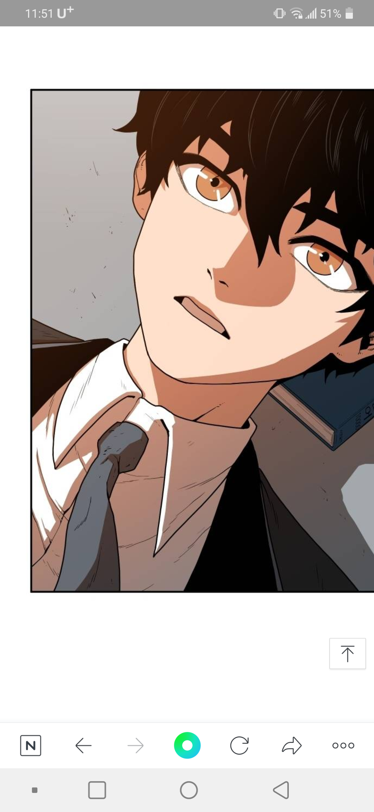

- 한정석
- 마파람
- 전아성
마파람

네이버 일요 웹툰 학교정벌
마파람 / 18세. 점수는 447점.
본 작품의 주인공이자 유일한 분교출신 만점자이다.
대림 학교의 학생회장을 맡고있다. 상당한 대인배로, 자신과 대립한 백민재나 한정석의 독단행동을 봐주거나 배신자들을 용서해 주는 행보를 보였다. 믿을 수 있는 학교들을 연합해 벽을 만들어 학교라는 개념을 전쟁의 장소가 아닌 배움의 장소로 바꾸겠다는 '학교정벌'을 계획하고 있다. 현재 대상연합의 연합장을 맡고 있다. 능력은 만점자 전용 SSS급 버프 프로메테우스이다.